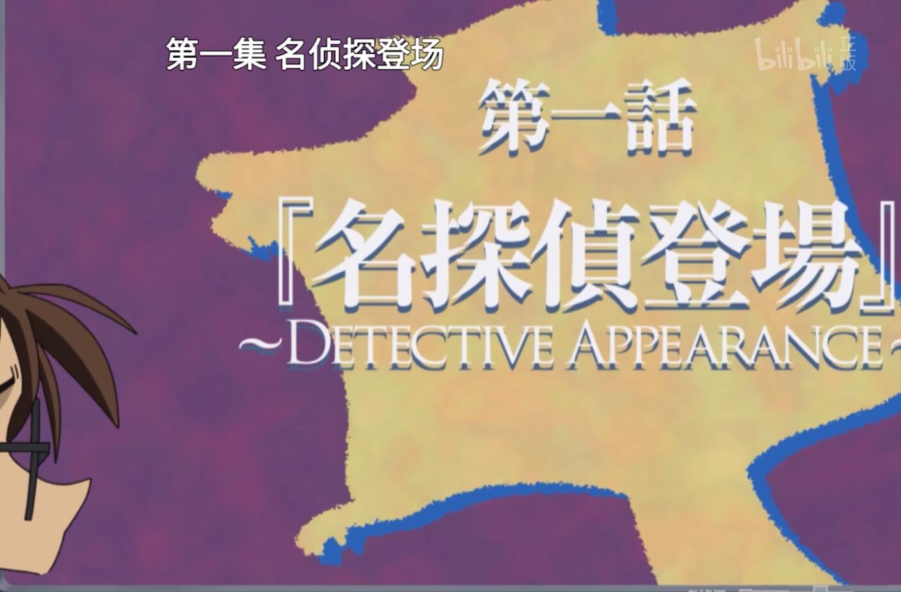
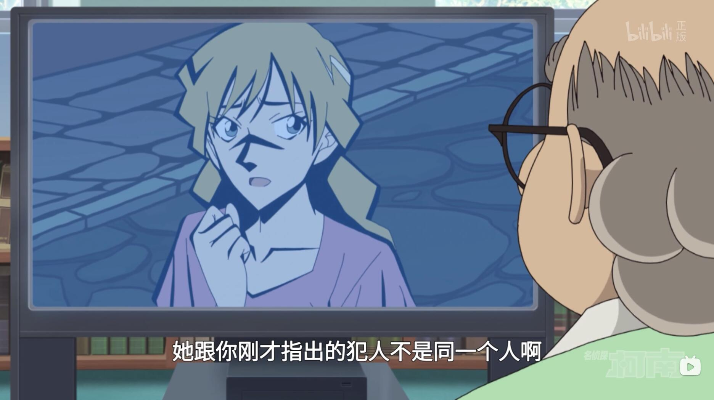
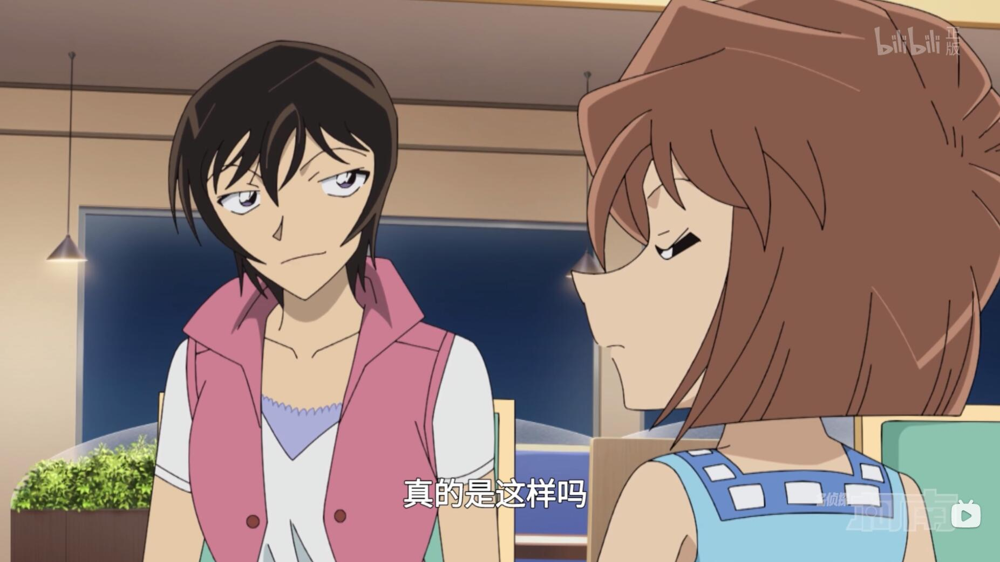
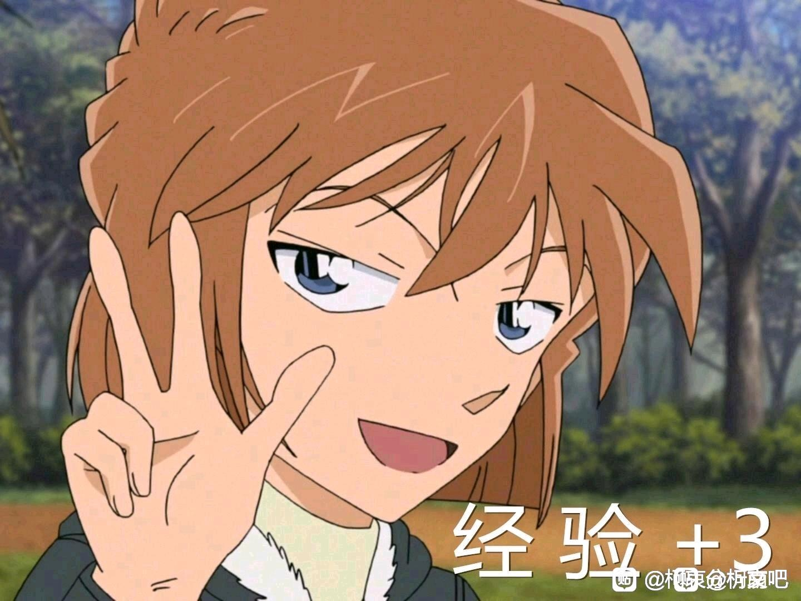

之前在全网诟病的浦泽义雄老师1147话《天才餐厅》的时候，我就在拙作：里面有过详细的解析。预告了这象征着一种风向，具有里程碑意义的一集。然后作为浦泽老师亲传弟子的大和屋晓就开始上分了，通过这一集可以明显看出来，大和屋晓是完全领悟到他老师的意图，并且开始发力，为转变柯哀的情势做铺垫了。
因为本集是由女子五人组以及博士柯南二人组双线推进的，所以我要分别讲。先说柯南这边。 首先是这个名字。
日语中，「ムササビ」与「モモンガ」的汉字表记虽然都可以写作「鼯鼠」，但其实二者是不同的生物。ムササビ是日本专有品种，生息于本州、四国、九州等地。夜行性，主要在树上生活，以种子或果实为食，在大树的树洞，房子的天花板上筑巣。与モモンガ的不同点在于ムササビ的体形比モモンガ大，此外飞膜的长势也不一样。モモンガ的飞膜是前后肢之间，ムササビ的飞膜却是前后肢之间，前肢与头，后肢与尾之间都有。为了区别，特意将「ムササビ」拟名为「飞鼠」。
那么，既然了解了ムササビ是什么东西了，咱们就可以很明显的了解到，这个就是在影射的名柯第一话《云霄飞车杀人事件》，飞鼠就指代的是云霄飞车。 随后是出现的一对男女，英伦背景，一对男女…有木有似曾相识的感觉？
随后是出现的一对男女，英伦背景，一对男女…有木有似曾相识的感觉？
明面上是指的马上要接的中场关门动画，但实际上你如果看到开门之后又把女子五人组看到嫌疑人一起开车离开那段又播了一边，强行水一分多时长，你就可以明白，他为啥要这么刻意安排。毕竟这种刻意水时长的情况，我记忆中好像很少出现吧。
这就是在直接影射的十年前的伦敦告白~你真的对自己的感情了解清楚了吗？新一君？
新兰党们半场开香槟，就宣称自己是官配是不是早了点？不到最后谁是官配还是未定论呢。更别提，日本动漫只有公式CP，也就是官推CP。所谓官配只不过是国内环境下的产物罢了，不要自嗨好么。
看看柯南震惊的样子，想想我之前的分析。
这不就是明摆着提醒大家，名侦探的初次推理是错误的，半场开香槟不可取啊！
名侦探真正的犯人是个戏耍了名侦探的家伙。
那么这个人是谁？还用问吗？╮(╯▽╰)╭
因为本集是由女子五人组以及博士柯南二人组双线推进的，所以我要分别讲。先说柯南这边。 首先是这个名字。
日语中，「ムササビ」与「モモンガ」的汉字表记虽然都可以写作「鼯鼠」，但其实二者是不同的生物。ムササビ是日本专有品种，生息于本州、四国、九州等地。夜行性，主要在树上生活，以种子或果实为食，在大树的树洞，房子的天花板上筑巣。与モモンガ的不同点在于ムササビ的体形比モモンガ大，此外飞膜的长势也不一样。モモンガ的飞膜是前后肢之间，ムササビ的飞膜却是前后肢之间，前肢与头，后肢与尾之间都有。为了区别，特意将「ムササビ」拟名为「飞鼠」。
那么，既然了解了ムササビ是什么东西了，咱们就可以很明显的了解到，这个就是在影射的名柯第一话《云霄飞车杀人事件》，飞鼠就指代的是云霄飞车。

随后就是第一话，名侦探登场，明摆着就是致敬名柯真·第一话《变小的名侦探》。
你与我如此相似……真是经典尖叫啊！果然是片头的女人。
剧集刚刚过半，柯南就说我知道凶手是谁了，手法都已经了解了。被博士直接质疑这才一半你就开香槟了？明面上是指的马上要接的中场关门动画，但实际上你如果看到开门之后又把女子五人组看到嫌疑人一起开车离开那段又播了一边，强行水一分多时长，你就可以明白，他为啥要这么刻意安排。毕竟这种刻意水时长的情况，我记忆中好像很少出现吧。
这就是在直接影射的十年前的伦敦告白~你真的对自己的感情了解清楚了吗？新一君？
新兰党们半场开香槟，就宣称自己是官配是不是早了点？不到最后谁是官配还是未定论呢。更别提，日本动漫只有公式CP，也就是官推CP。所谓官配只不过是国内环境下的产物罢了，不要自嗨好么。

来看看柯南选中的犯人是谁吧。竟然是开头那位和兰一样的尖叫女士哦！
而博士与柯南这边的最后，竟然给留下了这么一句话，说明真正的犯人并不是那位尖叫さん。看看柯南震惊的样子，想想我之前的分析。
这不就是明摆着提醒大家，名侦探的初次推理是错误的，半场开香槟不可取啊！
名侦探真正的犯人是个戏耍了名侦探的家伙。
那么这个人是谁？还用问吗？╮(╯▽╰)╭
2023-07-24 21:37 | 天丰药厂老王:的确，甚至这一话兰和伦敦篇衣服一样2023-07-24 22:50 | 贴吧用户_0Q8721R:回复 天丰药厂老王 :还是新兰党发现的2023-07-24 23:29 | 灵子の伶俐:楼主我认真回看了一下，发现柯南至少说了两次错的犯人。柯南第一次指认的犯人没画出来，中场指认的是尖叫女子，博士说她跟你之前说的不是同一人。结局最终出了真正的犯人后博士说跟你之前指认的不是同一人。至少你柯看电视剧是玩不过编剧了2023-07-25 08:01 | lanran2333:62023-07-25 09:11 | 蓝月哀:飞鼠杀人案这个名字可能是在致敬福尔摩斯，原著《吸血鬼》那一篇里，福尔摩斯提到一句自己侦办过苏门答腊巨鼠案，不过这个案子华生没有写出来。2023-07-25 12:14 | 石田安:回复 蓝月哀 :这个应该不会，因为飞鼠是日本特有物种。运动模式就跟云霄飞车似的在树枝之间来回飞，很惊险刺激。所以飞鼠=云霄飞车应该没错。毕竟苏门答腊巨鼠案是原著只是提过一嘴的，对于不清楚内容的情况下，一般不会去致敬这个。2023-07-31 15:42 | 白某笑而不语🐶:6

本集另一条线则是女子五人组，开头就是兰园二人的女子高中生的日常，重点是突出她俩的普通人属性。
 官方吐槽最致命……
在女子日常中达成共识的四位普通女性与格格不入的我哀形成了鲜明对比。
然而，即使如此，当涉及到案件的时候，则是由我哀代替了柯南的位置，开始引发大家思考了。
同时还有代替了柯南的犀牛鼻，卧槽，真的绷不住啊！(*/ω＼*)
然后就是经典的真·同步率100%环节了……
官方吐槽最致命……
在女子日常中达成共识的四位普通女性与格格不入的我哀形成了鲜明对比。
然而，即使如此，当涉及到案件的时候，则是由我哀代替了柯南的位置，开始引发大家思考了。
同时还有代替了柯南的犀牛鼻，卧槽，真的绷不住啊！(*/ω＼*)
然后就是经典的真·同步率100%环节了……
这一段简直是满满的恶意啊！
直接把兰跟步美画等号了！一个男主的青梅竹马&交往对象和一个真·小学一年生同等待遇……看完这话，谁不说一句小兰和步美好像啊！如此突出展现是为啥，大家懂都懂了…… 随后女子五人会在我哀的引导下，顺利进行了情报汇总。
园子与步美的水准一样也是没谁了……
最后被我哀用常识搪塞了园子的质疑，笑死。
这一段简直是满满的恶意啊！
直接把兰跟步美画等号了！一个男主的青梅竹马&交往对象和一个真·小学一年生同等待遇……看完这话，谁不说一句小兰和步美好像啊！如此突出展现是为啥，大家懂都懂了…… 随后女子五人会在我哀的引导下，顺利进行了情报汇总。
园子与步美的水准一样也是没谁了……
最后被我哀用常识搪塞了园子的质疑，笑死。
2023-07-24 23:08 | 鄙人是▫:她就是长大后的你2023-07-25 00:03 | Akii◆:佐藤警官已经被削成了普通女性了吗2023-07-25 05:32 | 坑爹的原型体:如果步美17岁的话2023-07-25 12:15 | 石田安:回复 Akii◆ :说实话啊，跟天才美少女科学家，FBI特工，CIA特工，MI6特工，女子高中生侦探之类的比较起来……佐藤警部补确实已经在名柯宇宙中算是普通女性了吧……毕竟她只能算白方啊。2023-07-26 05:55 | 听风吹冫落歌ლ:回复 Akii◆ :也没有，哀就提了一个开头，下面都是佐藤在详细说2023-07-26 12:55 | Pellow🐼:回复 石田安 :实际这次事件 主c还是佐藤警部补，辅c还是小哀，就兰內酱还是老思想，遇到事件找柯南或者老爸解决。2024-03-03 14:44 | 拂晓苍灵:其实兰和步美画等号没太大问题，因为这俩都是亲的脸颊

本集最精彩的，猫眼五姐妹华丽登场~
很多人可能只是听说过《猫眼三姐妹》这个名字，知道里面是一个由三个亲姐妹组成的美女怪盗组合，专门偷名画的，喜欢穿紧身衣。但是对于具体内容大概知之甚少吧。
该漫画连载于1981年到1984年，83年被动画化，2001年才被正式引进国内，2003年在教育台播出过。
可以说，这部作品对于我这一代人来说，属于名副其实的性启蒙动漫之一，另一部大概就是桂正和的《电影少女》了……
所以本集用KUSO猫眼三姐妹来搞事情，就很能说明问题了。因为年龄段的问题，《猫眼三姐妹》也算是日本三十代的性启蒙经典漫画之一，而这一代人恰好也是看着名柯长大的，代入感就会极强，就特别有内涵意义了。 大家可以看到上图所示，因为《猫眼三姐妹》的动画也是TMS做的，属于版权方，可以明目张胆的用这个来恶搞，配色以及服饰基本上是对等的了。除了步美这个粉色系从未出现过以外，其他色系的服装都在动画中出现过。这就很容易分辨出，图中这几位分别指代的谁。
下面我给大家发两张图，大家就看明白了。 这是《猫眼三姐妹》早期的时候，三人的穿着。 这是《猫眼三姐妹》后期，三人的穿着。
发现华点了吗？
众所周知，《猫眼三姐妹》的女主，是二姐来生瞳，也就是上面C位这个。旁边两个，成熟一些的是大姐来生泪，卷发的是三妹来生爱。
而名柯这集中，穿着蓝色以及绿色紧身衣的是谁？
兰和哀。女主地位明显，属于看过《猫眼三姐妹》的马上就能GET到的点。
而整个模拟犯案过程，我哀是负责电脑黑客部分，等于是抢了本来属于扮演来生爱的园子的活儿，导致园子就丢个瓶子和看车的步美一样属于龙套了。而正面突破则是由佐藤和兰负责，正好迎合了《猫眼》设定中，泪姐和小瞳的职能分工。
属于进一步帮大家唤醒了儿时的记忆，更能引发共鸣。
在这点上，我就要说了。这可真是太妙了！
因为《猫眼》就是来生家姐妹的父亲是德国画家海因茨，但是因为父亲失踪，导致女儿们就开始通过盗窃的方式回收父亲的藏品，寻找父亲的故事。
那么来谈谈兰哀一起COS的女主来生瞳吧。
来生瞳因为家庭富裕，从小就生活在顶级富豪圈，所以喜好奢侈品，对时尚非常有品位。虽然有时候会发一些大小姐脾气，但是对待俊夫确实一心一意的，青梅竹马哟~~
最喜欢男友内海俊夫给她的用录音带录制的回信，非常讨厌俊夫的不主动，喜欢变装成猫眼之后调戏俊夫。认为只要和俊夫在一起做什么都很开心，极其享受这种感觉。
而小瞳对于俊夫的感情也是在日常的点点滴滴中逐渐增加改变的。从最初只是认为俊夫长得像自己父亲（没错，来生姐妹三人都是恋父情结）才心生好感，到后来随着不断的接触被俊夫正直，勇敢，善良，温柔所感动，陷入深爱不能自拔。但是又因为俊夫是一直在抓捕猫眼的警察而不能坦白，反而是自己不断凭借“同居”优势套取情报，制定作战计划，逃避追捕。这种反复的撕扯让小瞳备受煎熬，负罪感不断加深。
当她最终承受不住向俊夫坦白之后，她又陷入了患得患失之中而遁走米国。从而病倒，患上脑膜炎失忆，从此神智只有十三岁的水平。
小瞳这些耳熟能详的经历一摆出来，大家来说说看，这是更像的兰呢？还是哀呢？
而作为男主的内海俊夫就更有趣了，作为负责抓捕猫眼的负责巡查部长。
这货可以在小瞳被怀疑时候据理力争，为小瞳辩解，使得小瞳没有过早暴露。
这货可以为了不与小瞳分开，在晋升考试的时候交白卷，放弃了去警视厅的升迁选择留在小瞳身边。
在小瞳向他坦白之后，以抓住猫眼为己任的俊夫没有选择逮捕来生姐妹，反而是果断的提交辞呈，购买婚戒，跑去米国找小瞳求婚。当得知小瞳失忆之后，他又向所有人发誓会让小瞳再一次爱上自己。
漫画最后的时候，俊夫拿出了八音盒，疑似唤醒了小瞳的记忆。在小泪姐和小爱在别墅看着外面俩人在海边嬉戏，当小瞳笑着说她跟俊夫在一起的时候有种说不出的喜悦和轻松，当两个人的笑脸定格在海面上的夕阳时；大家才终于明白，原来两人那所谓的心结早已解开。如今的俊夫和小瞳早已成为了一对形影不离的命运共同体，共同牵引着那永远的羁绊……。
啧啧，诸君，这经历，又像谁呢？
很多人可能只是听说过《猫眼三姐妹》这个名字，知道里面是一个由三个亲姐妹组成的美女怪盗组合，专门偷名画的，喜欢穿紧身衣。但是对于具体内容大概知之甚少吧。
该漫画连载于1981年到1984年，83年被动画化，2001年才被正式引进国内，2003年在教育台播出过。
可以说，这部作品对于我这一代人来说，属于名副其实的性启蒙动漫之一，另一部大概就是桂正和的《电影少女》了……
所以本集用KUSO猫眼三姐妹来搞事情，就很能说明问题了。因为年龄段的问题，《猫眼三姐妹》也算是日本三十代的性启蒙经典漫画之一，而这一代人恰好也是看着名柯长大的，代入感就会极强，就特别有内涵意义了。 大家可以看到上图所示，因为《猫眼三姐妹》的动画也是TMS做的，属于版权方，可以明目张胆的用这个来恶搞，配色以及服饰基本上是对等的了。除了步美这个粉色系从未出现过以外，其他色系的服装都在动画中出现过。这就很容易分辨出，图中这几位分别指代的谁。
下面我给大家发两张图，大家就看明白了。 这是《猫眼三姐妹》早期的时候，三人的穿着。 这是《猫眼三姐妹》后期，三人的穿着。
发现华点了吗？
众所周知，《猫眼三姐妹》的女主，是二姐来生瞳，也就是上面C位这个。旁边两个，成熟一些的是大姐来生泪，卷发的是三妹来生爱。
而名柯这集中，穿着蓝色以及绿色紧身衣的是谁？
兰和哀。女主地位明显，属于看过《猫眼三姐妹》的马上就能GET到的点。
而整个模拟犯案过程，我哀是负责电脑黑客部分，等于是抢了本来属于扮演来生爱的园子的活儿，导致园子就丢个瓶子和看车的步美一样属于龙套了。而正面突破则是由佐藤和兰负责，正好迎合了《猫眼》设定中，泪姐和小瞳的职能分工。
属于进一步帮大家唤醒了儿时的记忆，更能引发共鸣。
在这点上，我就要说了。这可真是太妙了！
因为《猫眼》就是来生家姐妹的父亲是德国画家海因茨，但是因为父亲失踪，导致女儿们就开始通过盗窃的方式回收父亲的藏品，寻找父亲的故事。
那么来谈谈兰哀一起COS的女主来生瞳吧。
来生瞳因为家庭富裕，从小就生活在顶级富豪圈，所以喜好奢侈品，对时尚非常有品位。虽然有时候会发一些大小姐脾气，但是对待俊夫确实一心一意的，青梅竹马哟~~
最喜欢男友内海俊夫给她的用录音带录制的回信，非常讨厌俊夫的不主动，喜欢变装成猫眼之后调戏俊夫。认为只要和俊夫在一起做什么都很开心，极其享受这种感觉。
而小瞳对于俊夫的感情也是在日常的点点滴滴中逐渐增加改变的。从最初只是认为俊夫长得像自己父亲（没错，来生姐妹三人都是恋父情结）才心生好感，到后来随着不断的接触被俊夫正直，勇敢，善良，温柔所感动，陷入深爱不能自拔。但是又因为俊夫是一直在抓捕猫眼的警察而不能坦白，反而是自己不断凭借“同居”优势套取情报，制定作战计划，逃避追捕。这种反复的撕扯让小瞳备受煎熬，负罪感不断加深。
当她最终承受不住向俊夫坦白之后，她又陷入了患得患失之中而遁走米国。从而病倒，患上脑膜炎失忆，从此神智只有十三岁的水平。
小瞳这些耳熟能详的经历一摆出来，大家来说说看，这是更像的兰呢？还是哀呢？
而作为男主的内海俊夫就更有趣了，作为负责抓捕猫眼的负责巡查部长。
这货可以在小瞳被怀疑时候据理力争，为小瞳辩解，使得小瞳没有过早暴露。
这货可以为了不与小瞳分开，在晋升考试的时候交白卷，放弃了去警视厅的升迁选择留在小瞳身边。
在小瞳向他坦白之后，以抓住猫眼为己任的俊夫没有选择逮捕来生姐妹，反而是果断的提交辞呈，购买婚戒，跑去米国找小瞳求婚。当得知小瞳失忆之后，他又向所有人发誓会让小瞳再一次爱上自己。
漫画最后的时候，俊夫拿出了八音盒，疑似唤醒了小瞳的记忆。在小泪姐和小爱在别墅看着外面俩人在海边嬉戏，当小瞳笑着说她跟俊夫在一起的时候有种说不出的喜悦和轻松，当两个人的笑脸定格在海面上的夕阳时；大家才终于明白，原来两人那所谓的心结早已解开。如今的俊夫和小瞳早已成为了一对形影不离的命运共同体，共同牵引着那永远的羁绊……。
啧啧，诸君，这经历，又像谁呢？
2023-07-25 12:20 | 石田安:建议与我另一篇原创集分析《被误解的大神——浦泽义雄 天才餐厅详细解析》一起食用，体验更佳哟~https://tieba.baidu.com/p/85005717402023-07-26 07:38 | bx所爱之人💞:03年的表示猫眼三姐妹也是我的性启蒙动漫，当时忘记是哪个台播放了，当时都是偷偷摸摸的看👀，家长一进来立马换台2023-07-26 07:43 | bx所爱之人💞:回复 石田安 :不过印象中二姐一直是蓝色，没想到后面变绿色了，可能国内没放完？时间久远有点忘了2023-07-26 09:54 | 石田安:回复 bx所爱之人💞 :国内版的魔改太多了，本来动画版的就魔改了很多，国内的加个更字……建议看原著漫画，你会佷容易GET到俊夫和小瞳之间的拉扯就跟柯哀蛮相似的。2023-07-27 07:28 | 穆铎EX:咳咳，组织统筹和提出犯罪模拟的步美也是很强的，ok。

本集的最后，蒙面团伙被抓，女子五人庆功宴。佐藤明显是发觉了本次推理几乎都是在我哀的引导下进行的，这个小女孩与柯南一样拥有同样的能力。没有新一，毛利，柯南的时候，我哀就是C位担当啊。本集总结起来就是柯南线宗旨就是以柯南指认凶手来影射他自以为的恋人并不是真正的本命，以此来暗喻新兰的叙事诡计，提醒大家别上当。
女子线则是利用国民影响级的《猫眼三姐妹》给大家打暗示，唤醒大家的回忆，为柯哀做铺垫。
整个这集整活是笑点与梗并进，非常出色的一集，除了画的崩了点，没啥缺点。但是又是一集如我之前所说，动画组转风向的一集，通过把步美与兰不断类比来开始给大家反复洗脑，降低昔日新兰的刻板印象。当大家觉得兰和步美没什么区别的时候，那么对于新兰未来分手也就没什么抵触了不是么？毕竟没人会觉得柯歩能成啊。╮(╯▽╰)╭
大和屋晓，不愧是你！浦泽老师的好徒弟！
2023-07-24 23:15 | 洛菲斯♬:没准这对师徒都喜欢哀，迫不及待地在动画中搞事情2023-07-26 13:05 | Pellow🐼:回复 洛菲斯♬ :其实是的，天才餐厅我觉得是被低估的，虽然是全网黑的状态。而且浦泽大师的话可能哀粉粉或者偏爱哀的。 搞笑剧本为主，但恋爱的商业街，发了柯哀糖，而且也是符合原著世界柯南与小哀感情进度相处的片段，深夜电话粥2023-07-26 13:21 | 石田安:回复 Pellow🐼 :[url]https://tieba.baidu.com/p/8500571740?pid=148049793879&cid=0#148049793879 [/url]我在文吧里面有发天才餐厅的解析的。你可以看看。2023-07-30 05:39 | zhangcy0416:动画组原创倒是柯哀糖多，为啥一到漫改就窝火2024-01-05 02:52 | 贴吧用户_78Ay7tK:回复 zhangcy0416 :因为他是原创 动画组不当真 毕竟名侦探柯南是漫改编动画 影响主线
62333333
兰姐对标步美哈哈哈哈哈哈
6啊
👍👍👍👍牛逼。猫眼三姐妹这里我也get到兰哀衣服是二姐的了，不过柯南那边完全没多想。只觉得我柯看个电视，俩个电话都不接笑死。
动画这个作画简直灾难
希望直美可以早日加入原作，哀需要一位實力相當的閨蜜
2023-07-24 23:12 | 鄙人是▫:柯南已经是绝对闺蜜2023-07-25 02:10 | 婆罗洲老斑鸠:回复 鄙人是▫ :同性跟异性还是有差距2023-07-26 06:12 | 红茶游戏🌈:回复 鄙人是▫ :兰姐身边总有一个园子推波助澜，如果后续发展柯哀，能多一个园子一样的人在身边助力，想来也是很有推动性也很有乐子的。2023-07-26 06:15 | 鄙人是▫:回复 红茶游戏🌈 :琴酒最给力了2023-07-28 19:59 | Pellow🐼:琴爷给柯南上强度，直美给小哀或者说小志保上强度，需要闺蜜情感支持。2023-07-28 20:04 | Pellow🐼:并不是所有人非得忍受兰或者给予毛利兰善意照顾。情感选择权双方，不能老让毛利兰天然pua冲锋 步美酱本来喜欢柯南，哀是支持闺蜜保护孩子。
回复 红茶游戏🌈 :是的，虽然园子作为女方闺蜜挺好，男方视觉有些操作挺反感。乱起哄，拱火，新兰园3人都是发小，却一直偏心兰，遇事不决怪新一。新一又不是两人爹，没义务给她俩必须兜底处理事情2023-07-28 20:11 | Pellow🐼:从幼儿园不断起哄施压 兰新配。
新一心情隐藏了，lsp设定一见钟情算了。但小兰明确 纽约篇才正式把新一当异性恋爱对象，园子带头老早起哄 新兰配。兰是新一的老婆等拱火话语。 不懂事 前 兰粉观感好差。虽然后来兰确实喜欢新一。但过早将女孩打标签另一个男孩子附属品。观感好差。（虽然现在已经不是云，无感轻微反感原著 毛利兰了2023-07-28 20:14 | Pellow🐼:）
虽然男生读者，但我喜欢看恋爱漫少女漫，大女主类网文或者恋爱轻小说。多数考虑女生那边视角。 以女生那边视角。园子一些操作好无语。有但不限 在女生明确告诉闺蜜别乱发私密照，依旧拱火行私自发私密照给有好感的男生。2023-07-28 20:17 | Pellow🐼:在兰姐 认知 柯南不等于新一的前提，伦敦篇未发生前，兰姐并不自信新一也喜欢自己。园子老拱火 私自发自己私密照给有好感的男生2023-07-28 20:22 | Pellow🐼:不会让男方觉得女生这边是勾引倒贴吗？
（也就理论书中知识，现实朋友没几个，不好说，层里女生社牛可以说说）
回复 红茶游戏🌈 :直美助力 哀酱，情感追求支持，不是如毛利兰周边人非得照顾兰心情，直美作为闺蜜了解柯哀相处史后，给哀酱正面追求情感支持也挺好。重新审视兰拉窗帘护炸弹犯恶劣事件。2024-02-19 10:00 | 彗星星🌟🌙🌞🌻:我只好感步美，公交车篇第一个注意哀不在，青铜古堡特别勇敢，直美能干些什么?感觉就是凑数的人。
等下，这里新兰穿的好像都是伦敦那一身
2023-07-24 22:49 | 莫牙:最搞笑的是我一开始没注意到，是微博有角粉说这一话预告里面小兰衣服和伦敦篇一样，肯定新兰有打进展。2023-07-25 01:13 | 图卢兹的幽灵:回复 莫牙 :进展，指不接电话。乐2023-07-25 06:04 | season_winds:伦敦还在输出2023-07-25 09:26 | 蓝月哀:说到这个，我想起来伦敦篇之后的紧急事件252，柯南穿玫红色，灰原穿粉紫色，和伦敦篇里的sr配色一模一样，我当时看到就感觉很微妙

但是73又不会透露结局给其他人。。？我认为顶多是有点原创要多给小哀重要戏份的预兆，替换成偶像明星的话那就是运营要开始转推小哀了所以慢慢的什么都会出现一下。当然了，运营是不是真的开始推不清楚，都是粉丝脑补，粉丝只要看到正主出现就开心
2023-07-24 23:03 | 阿库拉9548:不会透露结局，但明眼人都能看出来走向，就算看不出来，在M26后也得多少加点戏份2023-07-24 23:10 | Aroma◎:不管别人怎么做，一定要别人说出来才认，和∠姐挺配的。2023-07-25 02:01 | LOVE华音:虽然73不会透露，但是两位编剧老师都在这个行业摸爬滚打那么多年了，故事的套路以及其中的隐喻、暗线我觉得是多少能猜到的，他们会对伏笔暗线之类的非常敏感2023-07-25 12:18 | 石田安:按照老贼自己说的，名柯的结局目前就只有他跟几个主编知道罢了。但是就像我之前在《被误解的大神——浦泽义雄》里面分析的一样。当时《天才餐厅》是浦泽老师根据自己对名柯的认知写了一个他的名柯结局推测。而大和屋晓是浦泽老师的徒弟，这一集很明显就是看出来老师想表达啥，然后开始上分了、。2023-07-28 21:41 | 暗涌寒流:如果73有孩子的话，他儿子问他他会说吗？

可以可以 很明显就是对标 生怕你看不出来
不管是浦泽老师还是大和老师，创作剧本都不是瞎写的，且不说大家分析的对不对，至少他们一定在刻意引导观众去分析。总之，妙就完事了
小瞳穿绿衣服我是没想到的，毕竟印象中就是蓝色了
对标步美
2023-07-25 09:27 | 薇薇鸢尾花IRIS:主要是角姐也打不过步美呀，步美的直球要是早十年打2023-07-25 11:34 | 暗雨樱哀:好家伙 这也太明显了2023-07-25 11:44 | DOORY💢:回复 暗雨樱哀 :超级微妙的感觉2023-07-25 11:52 | 丶西园寺世界✨:小兰最后可能要和步美殊途同归了
回复 overdry :虽然确实是对标的暗喻，但是这个分镜让我觉得好怪，突然有个既视感，总感觉最后如果新兰be分手了，也会像是这样的情况，步美和兰同时打电话导致柯南身份暴露的感觉2023-07-25 11:54 | DOORY💢:回复 丶西园寺世界✨ :那时候柯南身份早该暴露了，至少兰应该要知道了。2023-07-25 11:56 | 丶西园寺世界✨:回复 DOORY💢 :感觉也应该是这样 但是那一幕柯南为了看电视不理睬步美和兰的电话 这一分镜放在普通恋爱动画里就是绝杀的一幕了的感觉，2023-07-25 12:09 | 石田安:我就是有点感叹，，
就是真·同步率100%真的大和屋晓这整活也是没谁了！当时看的时候我特么笑死好么！2023-07-26 06:13 | long126zhen:差远了，步美可不得了，追小柯比小兰进度快多了，貌似见柯南第一天就完成了小兰十几年的最终成果，亲脸。如果步美是新一的青梅，早就大势已定了2024-01-08 07:29 | love最爱zero:说起来这话才看出来，步美的发型根本是小兰的前发+园子发箍、后发的结合呀！！！我真是个星际玩家
妙啊
我不敢看懂
分析的好，原来是版权方搞事情。暴露年龄系列啊。我没看过猫眼，只看过城市猎人。感谢解读科普，不然还真看不出来
2023-07-25 12:10 | 石田安:大佬啊~~~~你老福特长期没更新图了啊！啥时候产粮啊！吾辈嗷嗷待哺啊~2023-07-25 14:36 | 石田安:其实《猫眼》推荐一定要看漫画原著，别看动画，魔改了很多。至于国内的版本那更是删的更多，基本除了剧情你能大致了解以外，其他啥都看不出来的类型。而《猫眼》原著中，小瞳与俊夫之间的拉扯感和柯哀非常相似。如果真的看过漫画，就很能轻易GET到我说的点。而这对于日本老观众来说。恰好是必备的~
動畫制作組生鏽的這麼快嗎？別急，先等時光膠囊篇作最終考試，看看他們對柯哀有多忠誠。
2023-07-25 07:24 | ikiyotaka:时光胶囊大概还有多久才能出啊。等不及了2023-07-25 10:54 | 莫牙:135亿终于让他们看清了谁是爸爸。不向着钱看才是有问题，希望动画组知道谁才是花钱的。2023-07-25 11:45 | DOORY💢:你猜青山休刊在干嘛
mll衣服是和伦敦篇一样这点有给我吓到 你们动画组有时候太懂影射了
绝对无语子
牛逼
哀见到毛利兰的时候显得格外烦躁，既不是将她当作普通女高中生，也不是像以前一样有些畏惧
有一说一，这和我现在看到毛利兰的心情是极为类似的
有一说一，这和我现在看到毛利兰的心情是极为类似的
2023-07-25 02:10 | 婆罗洲老斑鸠:2023-07-25 05:47 | 顽皮鬼才:那些说哀喜欢mll的人，都可以省省了，哀本来就对mll很不耐烦了，越往后只会越不耐烦2023-07-25 09:45 | º和泉紗霧º:我也挺烦躁的，出场戏份少还好，一旦戏份多就是一大堆雷2023-07-25 11:46 | DOORY💢:小哀能看这个抢人头的顺眼才怪呢。多少次付出最少感动最多了。2023-07-26 06:09 | 社会猫😾:回复 DOORY💢 :看37楼，画面显示的不是对兰烦的2023-07-26 13:11 | Pellow🐼:回复 DOORY💢 :烦倒不至于，偏向无感，以及这人脑子不好的无奈。2023-07-26 13:12 | Pellow🐼:回复 社会猫😾 :求分析，哀经常闭眼说话的表情，这个有什么含义吗？2023-07-26 13:17 | 社会猫😾:回复 Pellow🐼 :看情绪，一般闭眼说话就是冷艳罢了。这个的话就是有点不耐烦2023-07-27 07:33 | 穆铎EX:回复 Pellow🐼 :小哀怎么样我不知道。 如果是我闭眼说话的话，要么是有心理优势在调戏自己的朋友，要么是不想交流、有点烦躁又有点无奈的勉强交流。2023-07-28 18:48 | Pellow🐼:回复 穆铎EX :谢谢😊解答2023-07-28 23:54 | 穆铎EX:回复 Pellow🐼 :但也可能非常单纯，只是因为她是个总是睡不够的哈欠女，闭眼社交已经习惯了。2023-07-29 01:02 | Koalas9:回复 DOORY💢 :确实，印象最深的就是柯南被关到棺材里那集
這集是動畫原創？
2023-07-25 01:59 | 贴吧用户_5NZCMSE:回复 sy8059 :是的
牛的这分析
虽然看过猫眼三姐妹，真的没想到还能这样理解，厉害了。
要我说还得是分析吧的吧友，光是一个原创动画回都能分析出如此有价值的信息👍
支持
我都不知道小瞳穿过绿色的衣服，当年电视上好像就没放到结局
等下，动画原创不是和原作分开来的吗？也要分析？
2023-07-25 12:25 | 四月蔷薇三叶草:这篇主要分析的是动画组的态度问题，从他们的态度也可以反推刚子的意图吧2023-07-25 12:28 | 石田安:回复 四月蔷薇三叶草 :正确说，刚子的态度是一如既往的。真正给新兰整活的是动画组啊。现在动画组都倒戈了，你可以想想这意味着啥啊~我之前浦泽老师哪一话就说了，他能容许小兰炸了这种画面出现，就意味着一种风向的转变。大和屋晓马上开始上分了。2023-07-25 13:55 | bcasse:回复 石田安 :明白

1
为什么角姐的手机还是翻盖的
2023-07-26 06:02 | 听风吹冫落歌ლ:日本现在用翻盖的不少
哀不耐烦的时候都没看着兰，为啥会觉得是嫌兰烦？黑也不能尬黑呀

2023-07-26 06:13 | 社会猫😾:这里小哀表情变化后看的是园子而不是兰，兰也没去看小哀。小哀说不耐烦的话回答的也是园子的问题。为啥这能跟哀烦兰扯上2023-07-26 06:13 | DOORY💢:其实不止这个镜头，包括后面坐下来聊天的情节。（动画组当然不会画对兰烦，本来就是对呈现出来的画面开的玩笑）2023-07-26 06:15 | 社会猫😾:回复 DOORY💢 :但是底下那层楼看着当真了，还觉得这画面对应后面漫画兰哀关系如何
打卡希望有去37楼的解析，哀酱闭眼说话表达怎么样的情绪呢？
37: 楼，从哀酱面对毛利兰和园子微微歪嘴，个人理解，喜欢肯不喜欢，无语和无奈的心情。为啥无语和无奈呢？
37: 楼，从哀酱面对毛利兰和园子微微歪嘴，个人理解，喜欢肯不喜欢，无语和无奈的心情。为啥无语和无奈呢？
为啥哀酱是无语和无奈的表情呢？

直美这边若能要未来加入志保这边阵营就好了，我觉得毛利兰周边人对兰太照顾了。也就是吧友说摘桃行为。瞳孔4也那样，逃避失忆就可以不追责不教育了？可能就是世界表“女主”降智光环吧。需要直美做志保这边闺蜜反“光环”，给小志保情感追求支持😁直美这边可不知道 新一与兰所谓儿戏的（短信交往情侣关系），但看在眼里亲身共同经历，柯哀相处双向守护奔赴。
也就是吧友说摘桃行为。瞳孔4也那样，逃避失忆就可以不追责不教育了？可能就是世界表“女主”降智光环吧。需要直美做志保这边闺蜜反“光环”，给小志保情感追求支持😁直美这边可不知道 新一与兰所谓儿戏的（短信交往情侣关系），但看在眼里亲身共同经历，柯哀相处双向守护奔赴。2023-07-30 09:00 | 贴吧用户_G5DZR4W:我觉得没有园子推波助澜，sr都没法走到现在这一步的，mll应该把园子供起来才是。2023-08-05 17:58 | 石田安:说实话，如果不是园子一直以来的起哄架秧子。新兰根本就没有任何可能才对。小兰应该给园子嗑一个以示感谢。

补充12楼剧情讨论
@Doyleeeee
@Doyleeeee
不太了解猫眼三姐妹，原来还有这层关系，我只能说妙啊妙啊
好细
而且兰姐穿的衣服就是伦敦告白篇穿的那身!
最近在看银魂，大和屋晓原来做那么无厘头没节操的喜剧，现在来做柯南还是收着了
女子聚会二也出现了步美和小兰一起给柯南/新一打电话的情节了